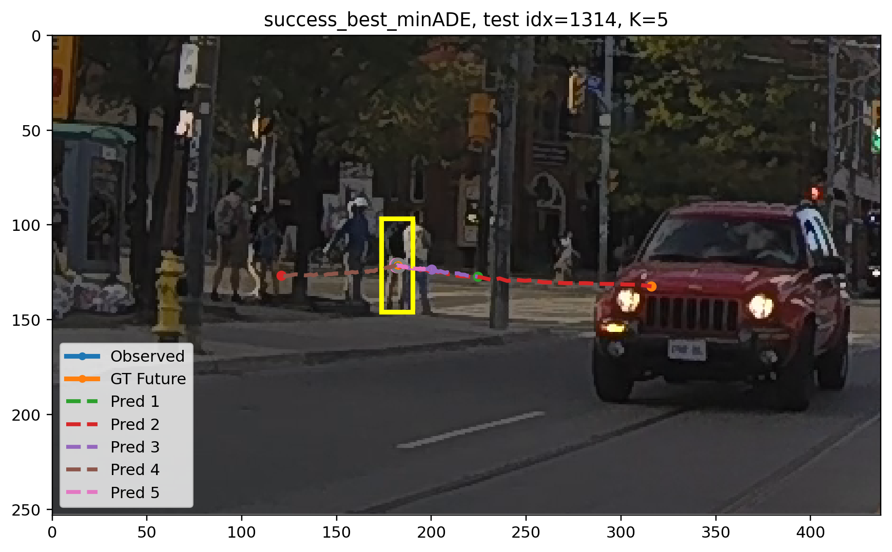
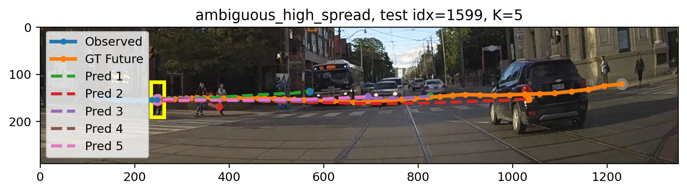
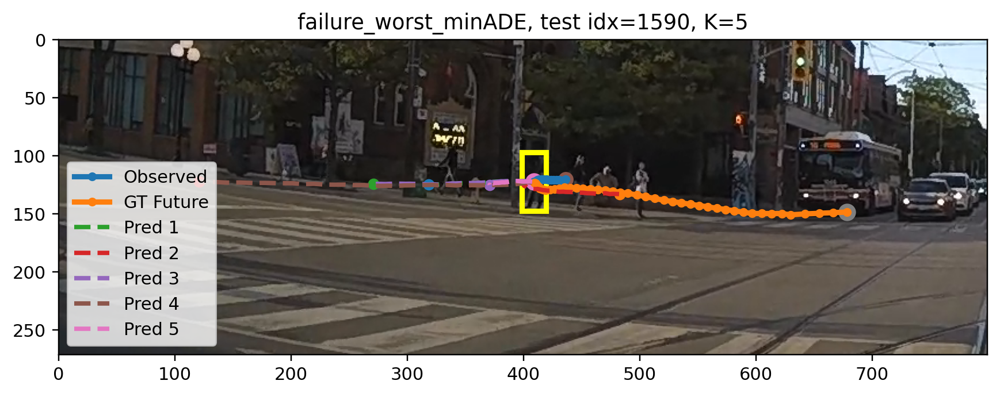

Multi-Future Pedestrian Trajectory Forecasting with Intent–Trajectory Consistency
Overview
Pedestrian future motion is often multi-modal: under the same observed history, a pedestrian may continue walking, slow down, stop, or start crossing. In this project, we study multi-future pedestrian trajectory forecasting on the PIE dataset. Instead of predicting only one future trajectory, our prototype predicts a set of K possible future trajectories and evaluates whether at least one of them matches the realized future.
We implement a lightweight PyTorch prototype using pedestrian bounding-box center trajectories. Given 15 observed center points, the model predicts 45 future center points. We compare a deterministic baseline with K = 1 against multi-future models with K = 5 and K = 10 using ADE, FDE, minADE, and minFDE.
Project Video
This video summarizes our motivation, approach, implementation, and main findings for the CS766 final project.
Motivation
Pedestrian forecasting is important for safe autonomous driving, especially near crosswalks, intersections, and occlusions. If the forecast is too late, the vehicle may brake too late and create unsafe situations. If the forecast is too conservative, the vehicle may stop unnecessarily and reduce traffic efficiency.
The main difficulty is one-to-many prediction. The same observed pedestrian motion history can lead to several plausible futures, such as continuing forward, slowing down, stopping, or starting to cross. A deterministic regression model tends to predict only one future and may produce an averaged trajectory when multiple futures are possible.
Problem Setup
Given a pedestrian's recent motion history in a driving video, the task is to predict their future motion. In our current prototype, we use pedestrian center points converted from bounding-box annotations.
- Input: past 15 pedestrian center points
- Output: future 45 pedestrian center points
- Goal: predict a set of K plausible future trajectories instead of a single deterministic future
Method
Data Processing
We parse PIE annotation XML files, convert pedestrian bounding boxes into 2D center points, keep contiguous tracks with sufficient length, and construct sliding windows with 15 observed frames followed by 45 future frames.
Model
Our model uses a GRU encoder to encode the observed center trajectory and an MLP prediction head to output K candidate future trajectories. When K = 1, the model becomes a deterministic single-trajectory baseline. When K > 1, the model outputs a set of possible future trajectories.
Best-of-K Training
We train the multi-future model using a Best-of-K loss. Instead of forcing every predicted trajectory to match the ground truth, this objective encourages at least one predicted future to be close to the realized trajectory.
LBoK = mink ∈ {1,...,K} (1 / T) Σt=1T ||ŷt(k) - yt||22
Experimental Setup
We conduct experiments on PIE set03 as a controlled prototype setting. This set contains 19 videos in total. We use videos 0001–0014 for training, videos 0015–0017 for validation, and videos 0018–0019 for testing.
The current prototype uses only pedestrian bounding-box center coordinates. We do not yet incorporate image appearance, road geometry, or ego-vehicle speed. This controlled setup allows us to isolate the effect of multi-future trajectory prediction.
Quantitative Results
Our main comparison is between the deterministic baseline and the multi-future model. The key result is that multi-future prediction improves set coverage, measured by minADE and minFDE.
| Model | K | Epoch | ADE@1 | FDE@1 | minADE@K | minFDE@K |
|---|---|---|---|---|---|---|
| Baseline | 1 | 30 | 13.27 | 34.68 | 13.27 | 34.68 |
| Multi-future | 5 | 30 | 15.11 | 39.48 | 7.17 | 16.30 |
| Multi-future | 10 | 20 | 60.32 | 202.90 | 6.40 | 13.05 |
Increasing K from 1 to 5 reduces minADE from 13.27 to 7.17 and minFDE from 34.68 to 16.30. This suggests that the multi-future model better covers the realized pedestrian future.
However, ADE@1 and FDE@1 do not necessarily improve. This is expected because Best-of-K training optimizes whether some predicted future matches the ground truth, not whether the first or default trajectory is always the best.
Qualitative Results
We visualize predicted future sets in three types of examples: a success case, an ambiguous case, and a failure case. These examples show that the predicted set can cover multiple plausible futures. However, without mixture weights or an intention head, the model does not yet tell us which future should be trusted most.

Success case: best minADE example.

Ambiguous case: high-spread predicted future set.

Failure case: worst minADE example.
Qualitative examples of predicted future trajectory sets.
Future Work
Our original project direction included intent–trajectory consistency. In the final prototype, we implemented and evaluated the multi-future trajectory forecasting component. The full intent–trajectory consistency regularizer remains an important future direction.
Future work includes adding mixture weights for different trajectory hypotheses, adding an intention head to predict crossing probability, and training a consistency regularizer that aligns the predicted crossing probability with the probability mass assigned to crossing-like trajectory modes. We also plan to incorporate richer inputs such as pedestrian appearance, scene context, road or crosswalk geometry, and ego-vehicle speed.
References
- Amir Rasouli, Iuliia Kotseruba, Toni Kunic, and John K. Tsotsos. PIE: A Large-Scale Dataset and Models for Pedestrian Intention Estimation and Trajectory Prediction. ICCV, 2019.
- PIEPredict repository: https://github.com/aras62/PIEPredict